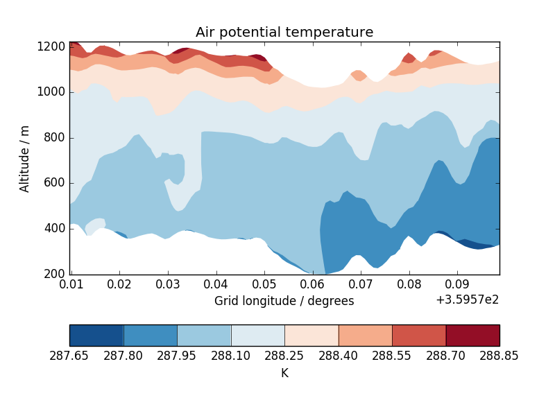

Cross section plots¶
This example demonstrates contour plots of a cross-sectioned multi-dimensional cube which features a hybrid height vertical coordinate system.
"""
Cross section plots
===================
This example demonstrates contour plots of a cross-sectioned multi-dimensional
cube which features a hybrid height vertical coordinate system.
"""
import matplotlib.pyplot as plt
import iris
import iris.plot as iplt
import iris.quickplot as qplt
def main():
# Load some test data.
fname = iris.sample_data_path('hybrid_height.nc')
theta = iris.load_cube(fname, 'air_potential_temperature')
# Extract a single height vs longitude cross-section. N.B. This could
# easily be changed to extract a specific slice, or even to loop over *all*
# cross section slices.
cross_section = next(theta.slices(['grid_longitude',
'model_level_number']))
qplt.contourf(cross_section, coords=['grid_longitude', 'altitude'],
cmap='RdBu_r')
iplt.show()
# Now do the equivalent plot, only against model level
plt.figure()
qplt.contourf(cross_section,
coords=['grid_longitude', 'model_level_number'],
cmap='RdBu_r')
iplt.show()
if __name__ == '__main__':
main()

(png)
{kind=link}

(png)
{kind=link}